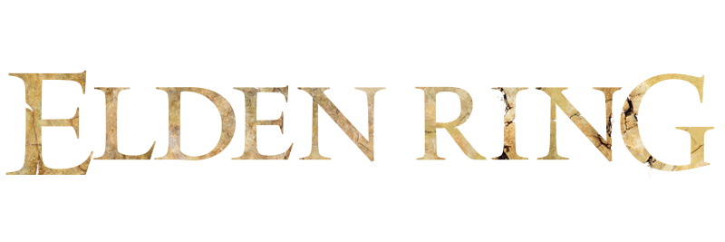

For those who don't understand why we're all obsessed with getting mowed down in boss battles against guys like Lord Massive, Master of the Biggest Swords, Elden Ring may end up being the most talked-about game of the year. These games have such attraction that you are either drawn into their grueling fighting or you are not. Even with this concession from FromSoftware, what the game tells you is only the top of the iceberg; everything it doesn't tell you is a gigantic body buried beneath the surface.
With Halo Infinite, 343 Industries has admirably returned to the fundamentals and centered the narrative around three key components: Master Chief's relationship with a personal AI, the conflict with a perilous new threat, and the bond between the two. As might be expected, the plot of the game has additional backstory and lore, but they only serve to enhance the main narrative rather than distract from it. It indicates that the plot of Halo Infinite is both deeply ingrained in popular culture and easily understandable to newbies. It also grabs your attention right away.
No Man's Sky had arguably one of the most infamous gaming releases in the previous ten years. The game was highly anticipated but fell short in almost every way, leaving players devastated with regret. Is the game still enjoyable to play four years after its initial release (and numerous substantial, free updates)? No Man's Sky shares the same fundamental gameplay mechanics as many other survival- and exploration-based games in its genre. You play as a character in a virtual world where you gather resources to construct a base, develop your skills to travel further, and engage in increasingly difficult battles with foes.
When combined with a sizeable chunk of Norway, Valhalla's expansive recreation of the British Dark Ages makes for an astonishingly sizable playing field for Assassin's Creed Valhalla. And it is really lovely wherever you are.
Grand Theft Auto V and Red Dead Redemption 2 are two of the best video games of the modern era, side by side. It is Rockstar's best storytelling to date and a beautiful portrayal of a horrible time period that is patient, polished, and a ton of joy to play. I can't wait to return and play more even after finishing the extensive plot. A painstakingly polished open world tribute to the outlaw era, this game is of a rare caliber. Looking for one of the best single-player action experiences of this generation? This is my recommendation.